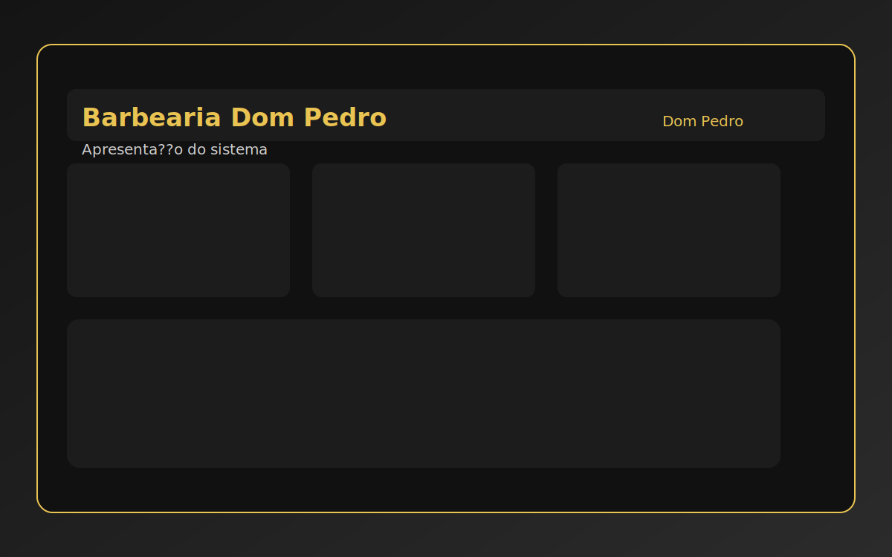
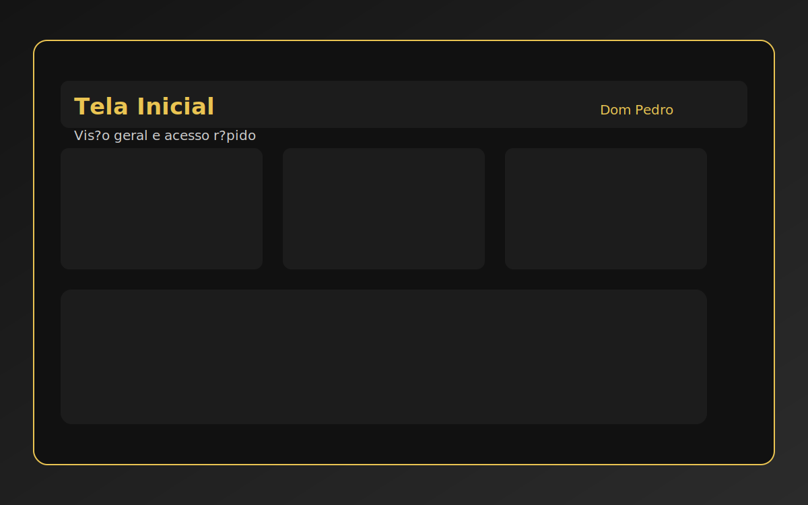
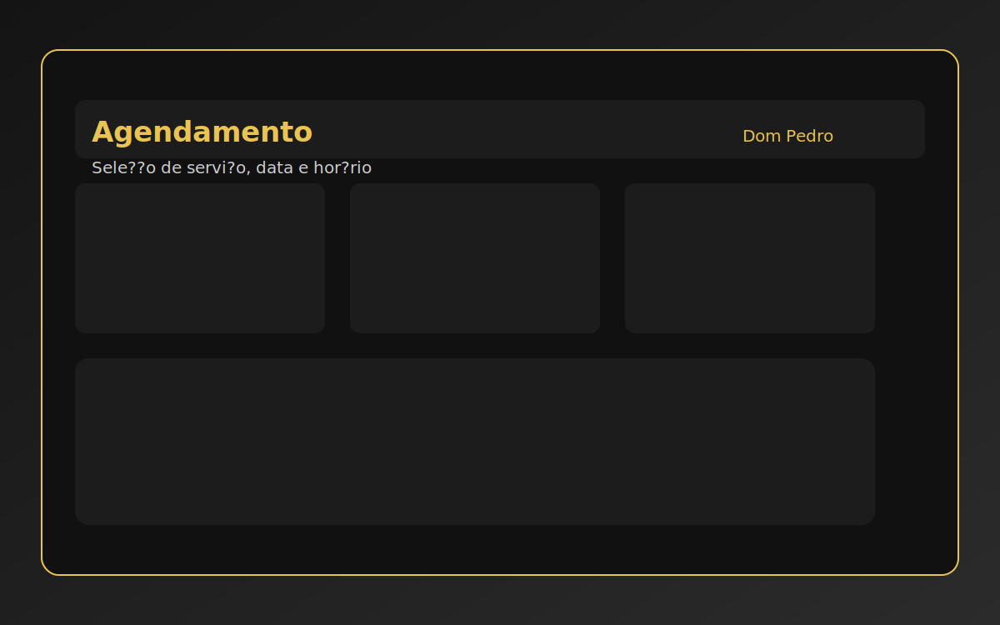
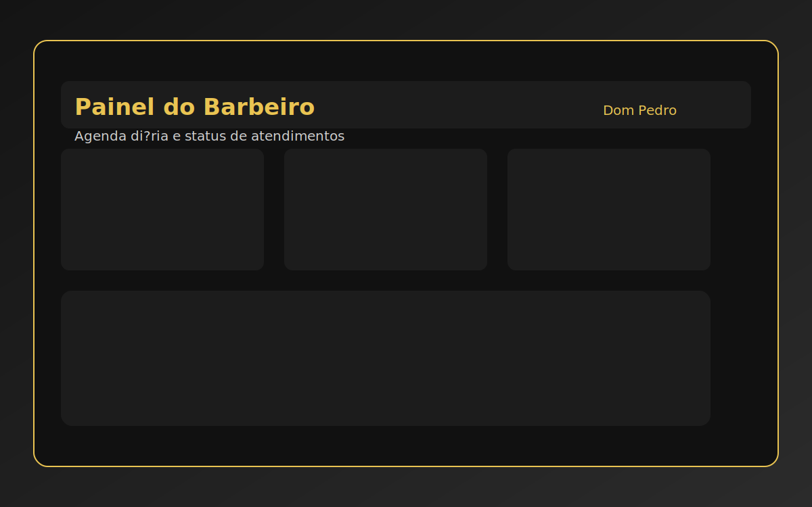
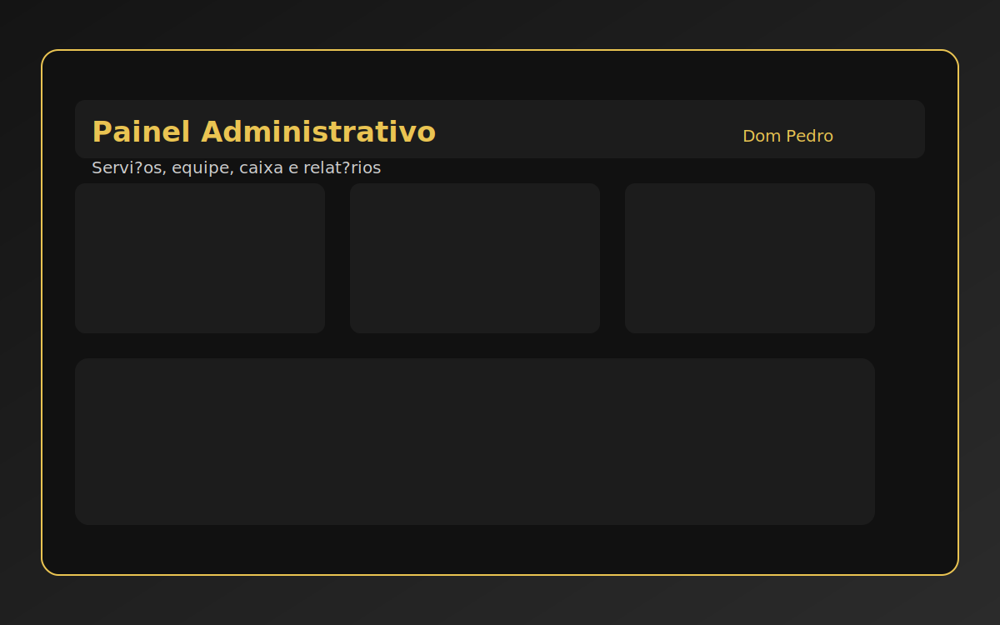
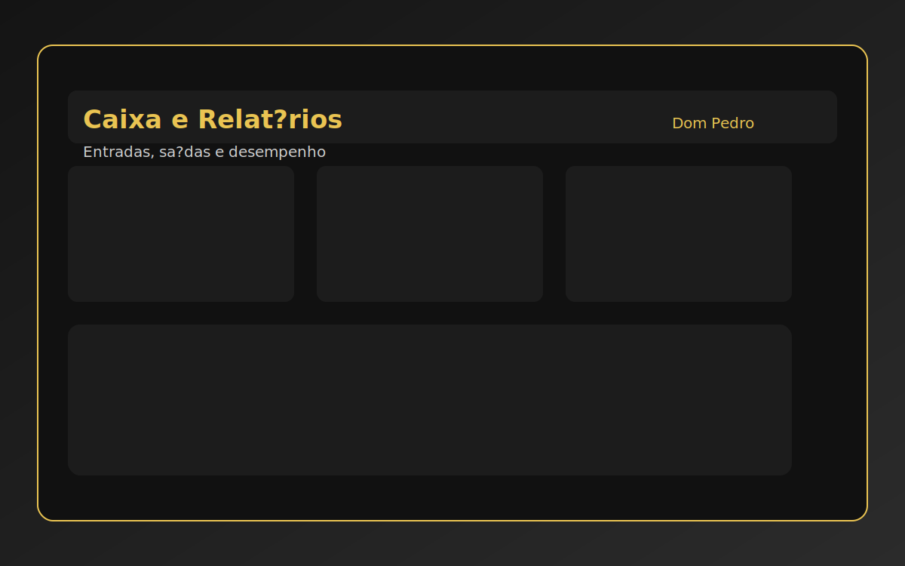

Documentação do Cliente
Barbearia Dom Pedro — Documentação do Cliente
Sistema de agendamento e gestão

Sumário
- Visão geral do sistema
- Acesso e primeiros passos
- Perfis e permissões
- Site público (página inicial)
- Cadastro, login e recuperação de senha
- Meu Perfil (dados e senha)
- Agendamentos (cliente)
- Painel do Barbeiro
- Painel Administrativo
- Regras, políticas e status
- Boas práticas e rotina do gestor
- Dúvidas frequentes (FAQ)
- Suporte e manutenção
- Observações finais
1. Visão geral do sistema
O Sistema Barbearia Dom Pedro centraliza os agendamentos, organiza o atendimento e oferece controle operacional em um único lugar.
Ele funciona via navegador (celular ou computador) e integra-se à API Barberia para serviços, usuários, comissões e caixa.
1.1 Componentes principais
- Página pública com serviços, informações e avaliações.
- Agendamentos para clientes (criação, remarcação e cancelamento).
- Perfil do usuário (dados e senha).
- Painel do Barbeiro (agenda, comissões e indisponibilidades).
- Painel Administrativo (usuários, serviços, indisponibilidades, comissões e caixa).
1.2 Fluxo rápido do atendimento
- Cliente cria conta e faz login.
- Cliente agenda um serviço.
- Barbeiro aceita o agendamento.
- Atendimento é concluído.
- Comissões e caixa são atualizados.
1.3 Quando a API está indisponível
- O site exibe serviços padrão para não ficar vazio.
- Algumas ações (agendamentos, avaliações e gestão) podem ficar limitadas até a API voltar.

2. Acesso e primeiros passos
- Endereço do sistema: ___________________________
- Requisitos: internet ativa e navegador atualizado.
- Acesso ao painel: somente usuários com permissão (barbeiro ou administrador).
2.1 Navegação básica
- Menu principal com: Serviços, Sobre, Informações, Avaliações, Agendar.
- Botões Entrar e Criar conta direcionam para login e cadastro.
- O botão Agendar leva ao formulário de marcação (exige login).
3. Perfis e permissões
| Perfil |
Quem usa |
O que pode fazer |
| Cliente (USER) |
Clientes da barbearia |
Agendar, remarcar, cancelar, avaliar e atualizar perfil. |
| Barbeiro (BARBEIRO) |
Profissionais |
Ver/aceitar agendamentos, concluir ou cancelar atendimentos próprios, ver comissões e registrar indisponibilidades. |
| Administrador (ADMIN) |
Dono/gestor |
Tudo do barbeiro + gerenciar usuários, serviços, indisponibilidades, comissões e caixa. |
4. Site público (página inicial)
4.1 Serviços
- Cards com nome, descrição, preço e imagem.
- Botão Agendar exige login.
- Se a API falhar, serviços padrão aparecem automaticamente.
4.2 Sobre e Informações
- Apresentação da barbearia.
- Endereço, horário de funcionamento e contato.
4.3 Avaliações
- Exibe avaliações dos clientes.
- Formulário com nome, nota (1 a 5) e comentário.
- Após enviar, a avaliação aparece quando a API confirma.
5. Cadastro, login e recuperação de senha
5.1 Criar conta
Campos obrigatórios: Usuário, Nome, E-mail e Senha. Telefone é opcional.
Ao finalizar, a conta é criada como Cliente (USER).
5.2 Login
- Login pode ser feito com usuário ou e-mail.
- Após login, o sistema redireciona para a página desejada.
5.3 Recuperar senha
- Informe o e-mail e clique em Enviar código.
- Digite o código recebido por e-mail.
- Informe a nova senha e confirme.
Recomendação: use senhas com no mínimo 8 caracteres.
6. Meu Perfil (dados e senha)
- Atualize nome e telefone.
- Altere a senha (nova senha + confirmação).
- Usuário e e-mail não são alteráveis nessa tela.
- ADMIN ou BARBEIRO verão atalhos para seus painéis.
- O botão Sair encerra a sessão.
7. Agendamentos (cliente)
7.1 Passo a passo
- Acesse Agendar.
- Escolha o profissional (opcional).
- Selecione o serviço.
- Informe data e horário.
- Confirme o agendamento.
O sistema exibe a duração média do serviço ao selecionar o item.
7.2 Regras de agendamento
- Necessário 15 minutos de antecedência.
- Domingo não está disponível.
- Horários exibidos: 09h às 12h e 13h às 20h.
- Datas passadas não podem ser selecionadas.
Para trocar serviço ou profissional, cancele e faça um novo agendamento.
7.3 Meus agendamentos
- Lista com data, hora, profissional e status.
- Remarcar altera apenas data e hora.
- Cancelamento permitido quando o status é REQUISITADO ou AGENDADO.

8. Painel do Barbeiro
Disponível para usuários com papel BARBEIRO (ou ADMIN).
8.1 Agendamentos
- Filtros por status e data.
- Admin também pode filtrar por profissional.
- Ações: Aceitar, Concluir e Cancelar.
A conclusão só é liberada 10 minutos após o horário marcado.
8.2 Comissões
- Lista por período com percentual e valor.
- Total exibido no resumo.
8.3 Indisponibilidades
- Tipos: Férias, Pausa, Manutenção, Outro.
- Informe início e fim.
- Remova quando precisar liberar agenda.

9. Painel Administrativo
Acesso exclusivo para ADMIN.
9.1 Usuários
- Filtros por nome, papel e status.
- Alterar papel: ADMIN, BARBEIRO, USER.
- Ativar/Desativar usuários.
9.2 Serviços
- Crie/edite nome, preço, duração e status.
- Imagem é opcional (o sistema usa ícone padrão se não houver).
- Excluir serviço remove o item; se houver agendamentos, ele é desativado.
9.3 Indisponibilidades
- Gerencie indisponibilidades de qualquer barbeiro.
- Recomendado para férias e eventos especiais.
9.4 Comissões
- Defina a taxa global de comissão.
- Opção Aplicar em todas para atualizar tudo de uma vez.
- Ajuste individual por item quando necessário.
- Filtro por período.
9.5 Caixa
- Lançamentos de Entrada e Saída com descrição e valor.
- Associação opcional a um barbeiro.
- Filtro por período e tipo.
- Resumo automático com Entradas, Saídas e Saldo.
- Lançamentos podem vir de atendimentos concluídos ou registros manuais.


10. Regras, políticas e status
10.1 Status do agendamento
| Status |
Significado |
| REQUISITADO |
Solicitação criada pelo cliente, aguardando aceitação. |
| AGENDADO |
Já foi aceito por um barbeiro. |
| CONCLUIDO |
Atendimento finalizado. |
| CANCELADO |
Cancelado pelo cliente, barbeiro ou admin. |
10.2 Regras importantes
- Conclusão só é liberada 10 minutos após o horário marcado.
- Cancelamento disponível enquanto estiver REQUISITADO ou AGENDADO.
- A troca de serviço/profissional exige novo agendamento.
11. Boas práticas e rotina do gestor
- Atualize serviços sempre que houver mudança de preço, duração ou descrição.
- Revise permissões quando entra ou sai alguém da equipe.
- Registre indisponibilidades com antecedência.
- Feche o caixa diariamente e confira entradas/saídas.
- Acompanhe comissões e ajuste a taxa quando necessário.
- Monitore avaliações para manter a qualidade do atendimento.
12. Dúvidas frequentes (FAQ)
1. Não consigo agendar para hoje. Por quê?
Provavelmente falta a antecedência mínima de 15 minutos ou a data é domingo.
2. O botão “Concluir” não aparece para o barbeiro.
Ele só libera 10 minutos após o horário marcado.
3. Um serviço não aparece para o cliente.
Verifique se o serviço está ativo no painel admin ou se a API está indisponível.
4. Esqueci a senha.
Use a seção “Esqueceu a senha” na tela de login e siga o envio de código.
5. Não vejo agendamentos no painel do barbeiro.
Confirme os filtros (status/data) e se o usuário está logado com perfil correto.
13. Suporte e manutenção
Para suporte técnico ou ajustes, utilize o contato abaixo:
Suporte técnico: ___________________________
E-mail: ___________________________
WhatsApp: ___________________________
14. Observações finais
Este sistema foi desenvolvido para oferecer organização, agilidade e experiência premium aos clientes e ao time da Barbearia Dom Pedro.
Sua utilização correta garante maior satisfação, fidelização e controle da operação.
O PDF inclui imagens ilustrativas dos principais painéis para facilitar a apresentação ao cliente.